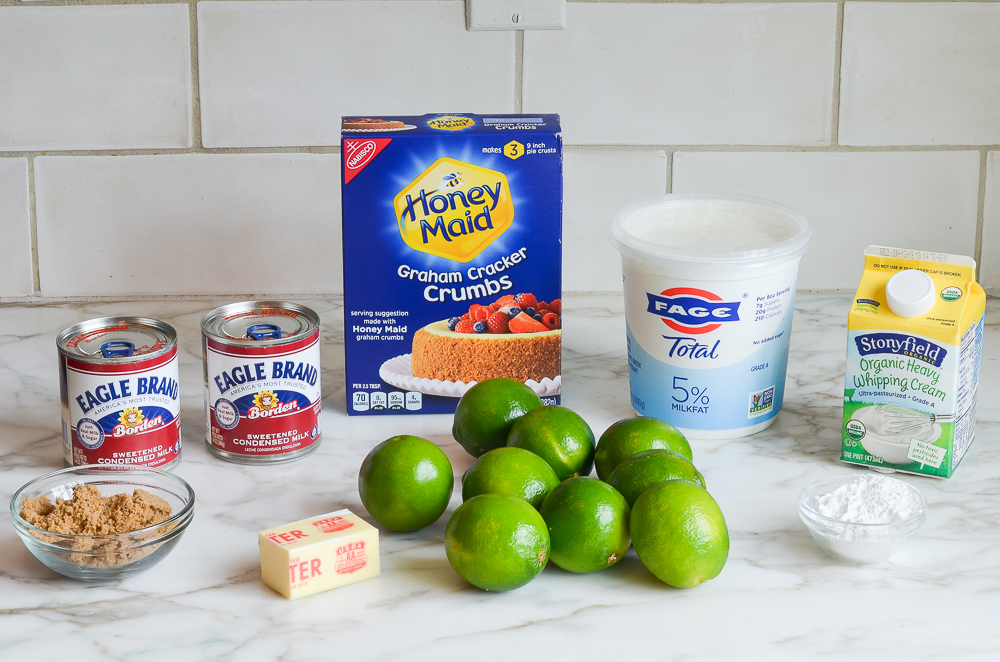
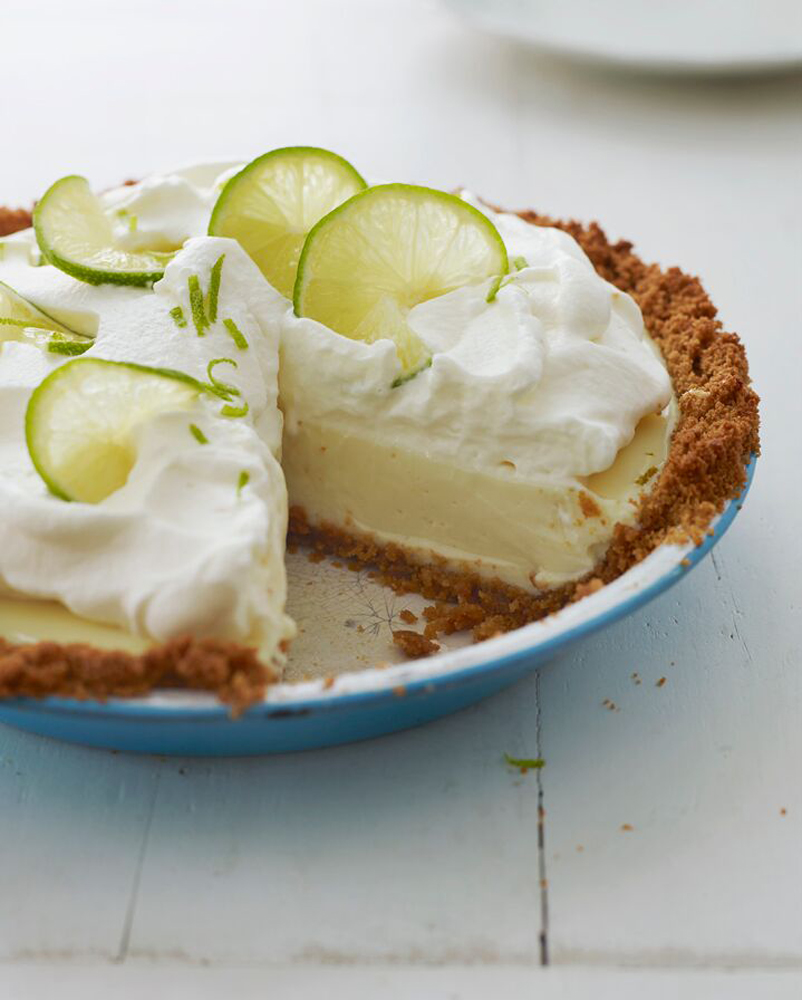

Recipe Info
- Cook Time: 35 mins
- Prep Time: 30 mins
- Chill Time: 3 hours
- Total Time: 4 hours 5 mins
- Yields: 8 servings
Ingredients
For the Lime Filling:
- 1 tablespoon grated key lime zest
- 1 cup plain Greek yogurt
- 2 14 ounce cans sweetened condensed milk
- ¾ cup fresh key lime juice
For the Graham Cracker Crust:
- 1½ cups finely crushed graham cracker crumbs
- ⅓ cup packed light brown sugar
- 4 tablespoons unsalted butter, melted
For the Whipped Cream Topping:
- 1 cups heavy cream, chilled
- 2 tablespoons powdered sugar
- 1 teaspoon grated lime zest
- 8 to 10 thin lime slices
Step 1: Make the Crust

Combine the graham cracker crumbs, brown sugar and melted butter in a mixing bowl.
Stir with a fork first, and then your hands until the mixture is well combined.
Using your fingers and the bottom of a measuring cup or glass, press the crumbs firmly into the bottom and up the sides of a 9-in deep-dish pie pan.
The crust should be about 1/4-in thick. (Hint: do the sides first.)

Bake the crust for 10 minutes, or until lightly browned. Then let the crust cool a bit while you make the filling.
Step 2: Make the Filling

Begin by zesting the limes.
Juice the limes using a citrus reamer.
Combine the juice with the sweetened condensed milk, yogurt, and lime zest.
Whisk to combine.
Pour the filling into the cooked graham cracker crust.

Bake for about 15 minutes, or until the filling is almost set.
Let the pie cool at room temperature for 30 minutes.
place in the refrigerator to chill thoroughly, about 3 hours.
Step 3: Make the Topping

In the bowl of an electric mixer fitted with the whisk attachment (or beaters), beat the heavy cream until soft peaks form.
Juice the limes using a citrus reamer.
Add the confectioners sugar and beat until medium peaks form.
Take the pie out of the refridgerator.
Top the chilled pie with the whipped cream.

Best served day of to avoid sogginess. If prepping in advance, do not pour the pie filling into pie crust until the day of serving.